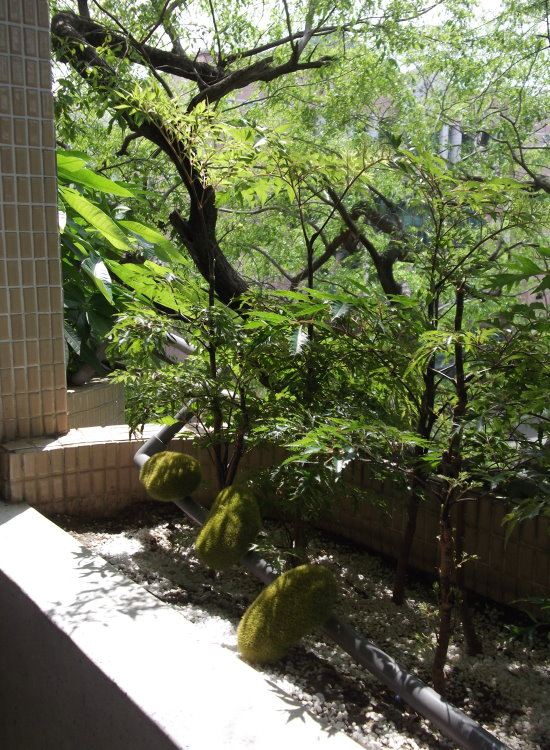
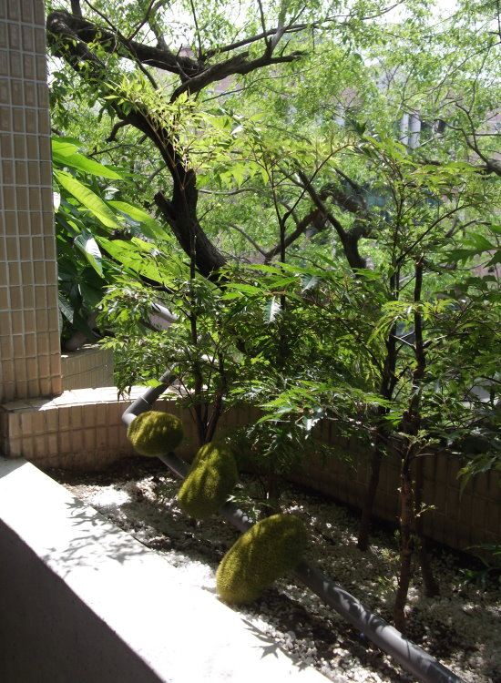

主角登場
植物名：鼠尾草 原產地：地中海沿海 分類：唇形花 花語：尊敬、智慧 花期：夏天至初冬 用途：抗菌助消化 栽培重點：光照足、耐旱
植物名：紅莧草 原產地：熱帶中、南美洲 分類：莧科 花期：全年可開花 用途：葉色則隨季節與日照狀況而出現變化，以觀葉為主 栽培重點：耐寒耐熱耐旱
植物名：福祿桐 原產地：熱帶美洲、亞洲、太平洋諸島 分類：五加科 用途：供盆栽，庭園樹及綠籬 栽培重點：象徵著多福多祿，喜高溫環境，較不耐寒(種植芹葉福祿桐及羽葉福祿桐二種不同葉形)


 
